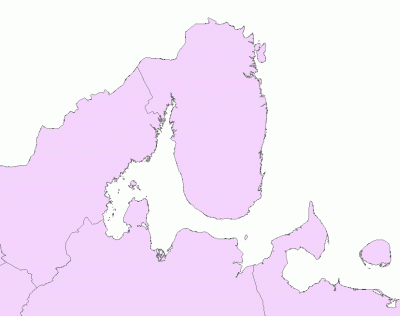
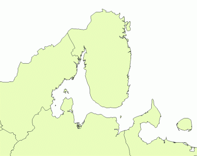
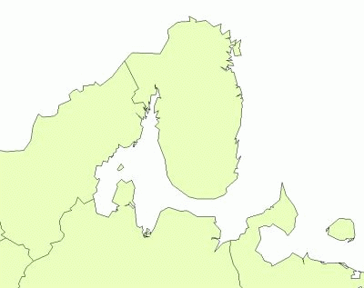

Разные уровни упрощения и скачка данных
Здесь приводится краткое описание генерализованных слоёв административного деления РФ на уровне субъектов РФ. Состояние деления на 2010 год. Операции по обработке данных производились в ArcGIS 9.3 (Arcinfo). Возможны артефакты упрощения.
Представленные наборы могут быть использованы для веб-картографии, простых тематических карт, визуализации статистики и так далее, там, где критичным является количество узлов объектов и/или повышенная точность и детализированность границ не нужна.
Кодировка атрибутивных таблиц CP1251.
Каждый слой также сопровождается файлом в формате GeoJSON.
Параметры N1-N4, которые меняются в зависимости от выбранного уровня генерализации. Их значения приводятся ниже.
0. Источник данных: Коллективный проект по картированию границ субъектов РФ
1. Перепроецирование в Альберс-Сибирь, WGS84 (параметры проекции)
(отметьте, что используется ГСК WGS84, а не SK42)
Исправлена вручную ошибка с лишней линией вдоль 180 меридиана (adv.editing - explode, select, merge)
2. Arctoolbox\Simplify polygon (management), алгоритм упрощения: POINT_REMOVE, Maximum Allowable Offset: N1, Minimum area: N2, Resolve_errors
3. Обновить поле AREA новыми значениями площади.
4. Выбрать все полигоны у которых [AREA]<N3
5. Arctoolbox\Eliminate (management). Eliminating polygon by border.
6. Выбрать все полигоны у которых [AREA]<N4
7. Удалить выбранные
Полигонов: 1506
Узлов: 628363
Размер shp-файла на диске: 10 138 369

Основным параметром генерализации является пороговое расстояние между узлами (tolerance, maximum allowable offset) или параметр N1 выше, по которому уровни и получили свое название. Чем выше это значение, тем сильнее упрощение.
N1: 1000
N2: 1000
N3: 10000000
N4: 10000000
Полигонов: 428
Узлов: 48007
Размер shp-файла на диске: 792 208

N1: 5000
N2: 5000
N3: 25000000
N4: 25000000
Полигонов: 208
Узлов: 10801
Размер shp-файла на диске: 184 584

N1: 10000
N2: 10000
N3: 50000000
N4: 50000000
Полигонов: 209
Узлов: 5896
Размер shp-файла на диске: 106 172
Дата создания: 07.07.2011
Автор(ы): Максим Дубинин